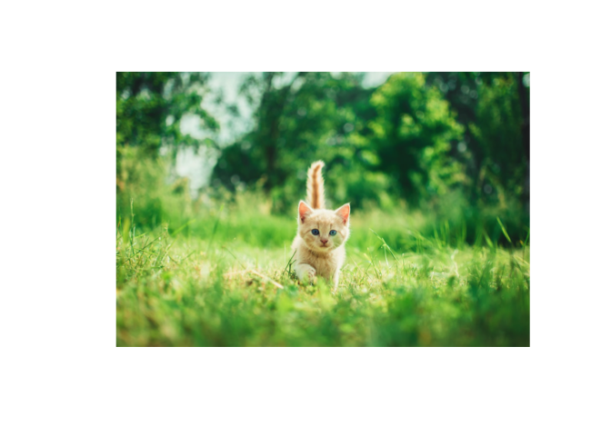
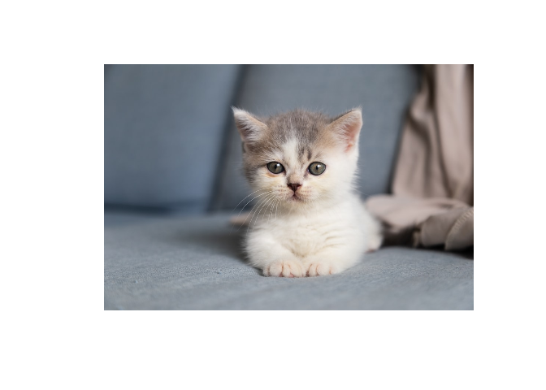

This package is designed for rainy days when your results are heartbreaking or when no matter what you try, you can’t seem to get rid of that bug. Take a respite from those negative thoughts by accessing kitty pictures and their adorable meows right from your R console 😻 and then get back to work again.
May these kitties bring some joy and amusement during your stressful data cleaning jobs! 😊
Installation
The package is available only on GitHub:
remotes::install_github("IndrajeetPatil/kittyR")Functions
There are only two functions in this package-
kittyR()
In case you want a picture of a kitty:

By default, the collection will include any kind of cat (big, small, wild, etc.). If you want only kittens, you can use an additional argument.
# to always have the same kitty on README
set.seed(144)
# show me the kitten NOW!
kittyR::kittyR(meow = FALSE, only_kitten = TRUE)
The collection of cat pictures comes from the following collections of freely available images:
meowR()
In case you just want to hear a meow either apropos nothing or at the end of execution of some code to let you know that the execution is complete, just include this line of code:
# can't print the sound, so
# meow meow meow
# you can choose from a sample of sounds included in the package
kittyR::meowR(sound = 4)If you have a kitty meow that you like and would like to include in the package, please either make a PR or e-mail it to me and I will include it.
Acknowledgments
This package was inspired by pupR package by Melissa Innerst.
The hexsticker was generously designed by Sarah Otterstetter (Max Planck Institute for Human Development, Berlin).
Code of Conduct
Please note that the kittyR project is released with a Contributor Code of Conduct. By contributing to this project, you agree to abide by its terms.